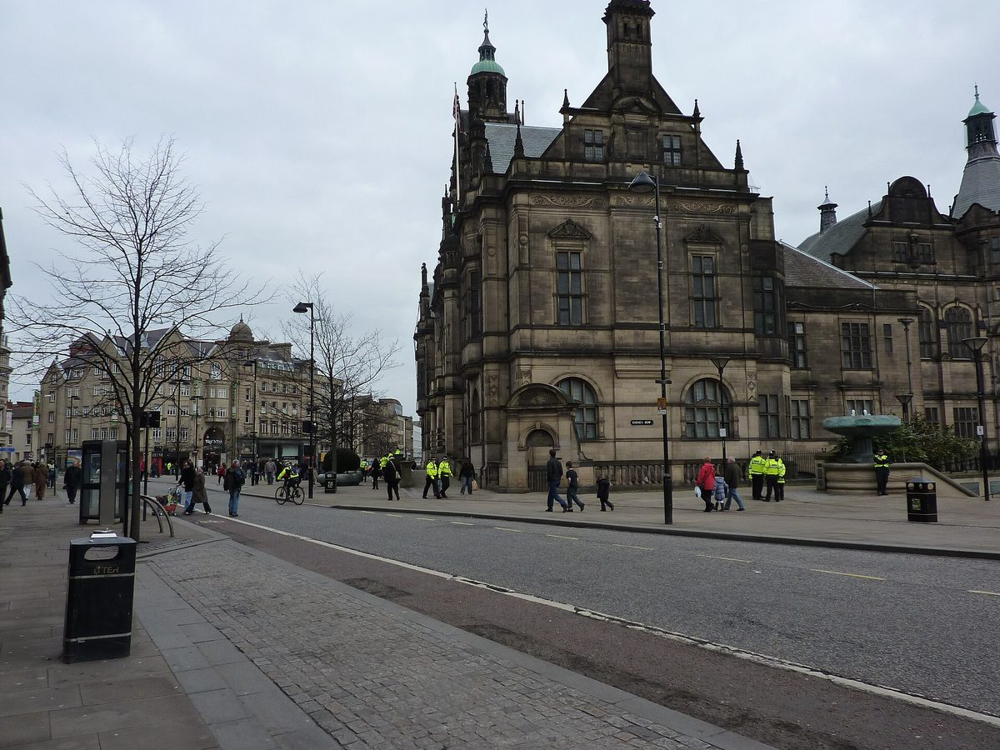

영국 셰필드시, 지역에너지계획 공개…공공건물 지붕 태양광·공동체 에너지 담아

시내 약 9,000가구 이미 지붕 태양광, 가구 약 14.3% 에너지빈곤 추정…2040년까지 3단계 추진
영국 잉글랜드 셰필드 시의회가 시 전체의 에너지 전환 방향을 담은 지역에너지계획(Local Area Energy Plan)을 내놓았다. 계획은 컨설팅사 모트맥도널드(Mott MacDonald)와 함께 기술 분석과 시나리오 모델링을 거쳐 만들었고, 기업·공동체 단체·대학·공공기관·배전망 사업자의 의견을 반영했다. 초기 우선 과제로는 공공·민간 주택 개선, 열 네트워크 구축, 적합한 시 소유·공공건물의 지붕 태양광, 집 밖 주차공간이 부족한 지역의 전기차 충전 확대가 꼽혔고, 학교·커뮤니티 건물·지역 단체가 직접 전기를 생산하도록 돕는 공동체 에너지 사업도 제안됐다. 시내에는 이미 약 9,000가구가 지붕에 태양광을 달았고 지역 가구의 약 14.3%가 에너지빈곤 상태로 추정돼, 계획은 전환의 중심에 공정성을 두겠다고 밝혔다. 추진은 2026~2030년 사업 가속, 2031~2035년 보급 확대, 2036~2040년 폭넓은 전환의 3단계로 나뉘며, 시의회는 다음 단계로 우선 사업을 구체화하고 사업성과 재원 방안을 검토할 계획이다. 알렉시 다이먼드(Alexi Dimond) 시의회 교통·재생·기후 정책위원장은 시 혼자서는 전환을 해낼 수 없다며 공동체·기업·대학·에너지 사업자·정부와 함께하겠다고 말했다.
시민에너지 관점
가구 약 14.3%가 에너지빈곤에 놓인 도시가 시 소유 건물 지붕과 학교·커뮤니티 건물을 발전소로 쓰겠다고 계획에 적은 것은, 에너지 전환을 복지와 공정의 문제로 다루겠다는 뜻이다. 계획만 있고 재원은 아직 정해지지 않았다는 한계가 있지만, 공공건물 지붕은 땅을 새로 살 필요가 없고 주민 갈등도 적어 지자체가 가장 먼저 움직일 수 있는 자원이다. 공공 지붕을 외부 사업자에게 빌려주는 데서 그치지 않고 지역 단체와 주민이 생산과 수익의 주인이 될 때, 줄어든 요금과 수익이 에너지빈곤 가구에게 돌아갈 수 있다. 국내 지자체도 공공건물 지붕과 유휴부지 목록부터 공개하고 주민 공동체 에너지에 우선 배정하는 지역에너지계획을 세워야 한다.
출처: LocalGov 2026-10-20 Izzy Lepone 원문 보기
英シェフィールド市、地域エネルギー計画を公表…公共建築物の屋根太陽光とコミュニティー・エネルギーを盛り込む
市内の約9,000世帯がすでに屋根に太陽光、世帯の約14.3%がエネルギー貧困と推計…2040年まで3段階で推進
英イングランドのシェフィールド市議会が、市全体のエネルギー転換の方向性を示す地域エネルギー計画（Local Area Energy Plan）を公表した。計画はコンサルティング会社モット・マクドナルド（Mott MacDonald）とともに技術分析とシナリオ・モデリングを経て策定され、企業、コミュニティー団体、大学、公共機関、配電網事業者の意見を反映した。初期の優先課題には、公営・民間住宅の改善、熱供給網の整備、適切な市所有・公共建築物への屋根置き太陽光の設置、敷地外の駐車スペースが少ない地域での電気自動車充電の拡充が挙げられ、学校やコミュニティー施設、地域団体が自ら電気をつくれるよう支援するコミュニティー・エネルギー事業も提案された。市内ではすでに約9,000世帯が屋根に太陽光パネルを設置しており、地域の世帯の約14.3%がエネルギー貧困の状態にあると推計されることから、計画は転換の中心に公正さを据えるとしている。推進は2026～2030年の事業加速、2031～2035年の普及拡大、2036～2040年の幅広い転換の3段階に分かれ、市議会は次の段階として優先事業を具体化し、事業性と財源の確保策を検討する。市議会の交通・再生・気候政策委員会のアレクシ・ダイモンド（Alexi Dimond）委員長は、市だけでは転換を成し遂げられないとして、地域社会、企業、大学、エネルギー事業者、政府とともに取り組むと述べた。
市民エネルギーの視点
世帯の約14.3%がエネルギー貧困にある都市が、市所有の建物の屋根や学校、コミュニティー施設を発電所として使うと計画に明記したことは、エネルギー転換を福祉と公正の問題として扱うという意思表示だ。計画はあっても財源はまだ決まっていないという限界はあるが、公共建築物の屋根は新たに土地を買う必要がなく住民との対立も少ないため、自治体が最初に動かせる資源だ。公共の屋根を外部事業者に貸すだけで終わらせず、地域団体と住民が発電と収益の所有者になるとき、下がった料金と収益がエネルギー貧困世帯に届く。韓国の自治体も、公共建築物の屋根と遊休地の一覧から公開し、住民のコミュニティー・エネルギーに優先して割り当てる地域エネルギー計画を立てるべきだ。
出典: LocalGov 2026-10-20 Izzy Lepone 原文を読む
英国谢菲尔德市公布地方能源规划，纳入公共建筑屋顶光伏和社区能源
市内约9,000户已装屋顶光伏，约14.3%的家庭估计处于能源贫困，到2040年分三阶段推进
英国英格兰谢菲尔德市议会公布了一份规划全市能源转型方向的地方能源规划（Local Area Energy Plan）。规划由市议会与咨询公司Mott MacDonald通过技术分析和情景建模共同制定，并吸收了企业、社区团体、大学、公共机构和配电网运营商的意见。早期优先事项包括改善社会住房和私人住宅、发展热网、在合适的市属建筑和公共建筑屋顶安装光伏，以及在缺少路外停车位的地区增加电动车充电设施；规划还提出开展社区能源项目，帮助学校、社区建筑和地方团体自己发电。市内已有约9,000户家庭在屋顶安装了光伏板，而当地约14.3%的家庭估计处于能源贫困之中，因此规划表示要把公平放在转型的核心位置。规划分三个阶段推进：2026至2030年加快项目落地，2031至2035年扩大推广，2036至2040年推动全面转型；市议会下一步将细化优先项目，并研究商业论证和资金方案。市议会交通、更新与气候政策委员会主席Alexi Dimond表示，市议会无法独自完成转型，将与社区、企业、大学、能源企业和政府携手推进。
市民能源视角
一座约14.3%家庭处于能源贫困的城市，把市属建筑屋顶、学校和社区建筑当作电站写进规划，意味着把能源转型当作福利和公平问题来对待。虽然目前只有规划、资金尚未落实，但公共建筑屋顶无需另购土地，居民冲突也少，是地方政府最先能够动用的资源。如果不只是把公共屋顶租给外部企业，而是让地方团体和居民成为发电和收益的主人，降低的电费和收益就能回到能源贫困家庭手中。韩国的地方政府也应先公开公共建筑屋顶和闲置土地清单，制定优先分配给居民社区能源的地方能源规划。
来源: LocalGov 2026-10-20 Izzy Lepone 查看原文
Sheffield publishes local area energy plan with rooftop solar on public buildings and community energy
About 9,000 homes already have rooftop solar and an estimated 14.3 percent of households are in fuel poverty; three phases run to 2040
Sheffield City Council in England has published a Local Area Energy Plan setting the direction of the city's energy transition. The plan was drawn up with consultancy Mott MacDonald through technical analysis and scenario modeling, drawing on input from businesses, community groups, universities, public bodies and energy network operators. Early priorities include improving social and private homes, developing heat networks, putting solar panels on suitable council and public buildings and adding electric vehicle charging where off-street parking is scarce, and the plan also proposes community energy projects to help schools, community buildings and local organizations generate their own power. About 9,000 homes in the city already have solar panels and an estimated 14.3 percent of households in the area are in fuel poverty, so the plan says it puts fairness at the heart of the transition. Delivery is split into three phases, accelerating projects in 2026-2030, scaling up in 2031-2035 and driving broader change in 2036-2040, and the council will next develop priority projects further and explore business cases and funding. Councillor Alexi Dimond, chair of the council's Transport, Regeneration and Climate policy committee, said the council cannot deliver the transition alone and will work with communities, businesses, universities, energy providers and government.
Citizen Energy View
A city where about 14.3 percent of households are in fuel poverty writing council roofs, schools and community buildings into its plan as power stations signals that it treats the energy transition as a matter of welfare and fairness. The plan still lacks settled funding, but public roofs need no new land and draw little local opposition, making them the resource a council can move on first. If public roofs are not simply leased to outside companies but local groups and residents become owners of the generation and its revenue, lower bills and income can reach households in fuel poverty. Korean local governments should start by publishing lists of public roofs and idle land and draw up local energy plans that give community energy run by residents first claim on them.
Source: LocalGov 2026-10-20 Izzy Lepone Read the original